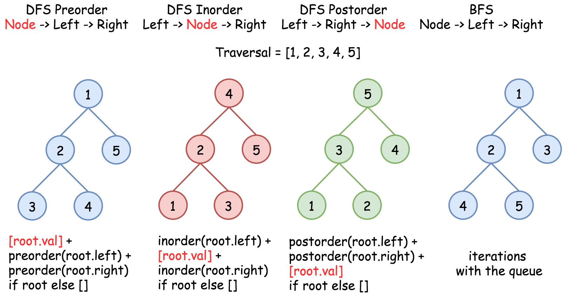
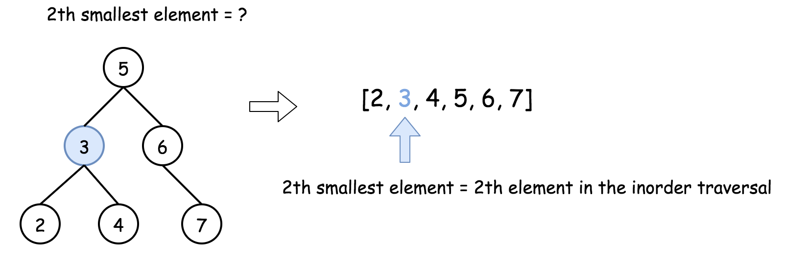
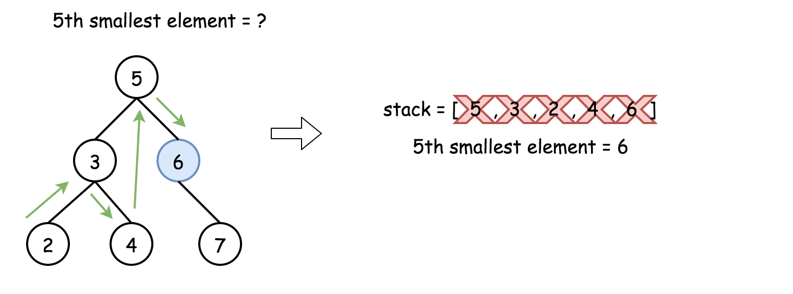
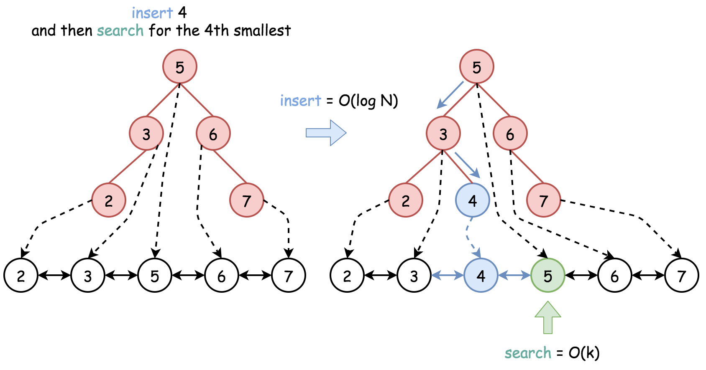

TODO: 树的非递归遍历还需要多加推敲，加强理解。




Given a binary search tree, write a function kthSmallest to find the *k*th smallest element in it.
*Note: *
You may assume k is always valid, 1 ≤ k ≤ BST’s total elements.
Example 1:
Input: root = [3,1,4,null,2], k = 1 3 / \ 1 4 \ 2 Output: 1
Example 2:
Input: root = [5,3,6,2,4,null,null,1], k = 3
5
/ \
3 6
/ \
2 4
/
1
Output: 3
Follow up:
What if the BST is modified (insert/delete operations) often and you need to find the kth smallest frequently? How would you optimize the kthSmallest routine?
1
Unresolved directive in 0230-kth-smallest-element-in-a-bst.adoc - include::/home/runner/work/leetcode/leetcode/src/main/java/com/diguage/algorithm/leetcode/_0230_KthSmallestElementInABST.java[]